当前 APK · 1.0.0
一纸读书煲
使用说明书 · 一个有趣的精神庇护所
把纸书扫进锅里，慢炖成可搜索的电子书和「一纸项目」，再把手写批注回锅加料。账号跟着你走，换手机登录即可同步。
产品预告
约 49 秒 · 1080p · 从打开界面到烹制一本书
目录
这锅怎么煮
四个动作对应 App 里的四件事：拍照备料 → 后台慢炖 → 阅读与一纸精华出锅 → 批注再回锅。
1. 安装 APK
- 用手机打开当前版本的安装包（约 54MB）。
- 若系统提示「禁止未知来源」，到设置里允许该文件管理器 / 浏览器安装应用。
- 安装完成后打开 一纸读书煲。
2. 连接服务器并登录
第一次打开会进入登录页。先填服务器，再取验证码。
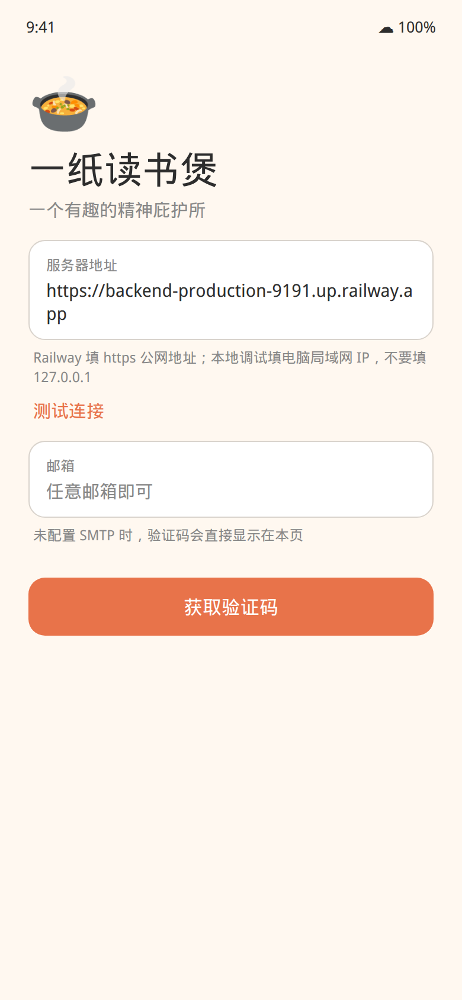
当前云端地址（复制到「服务器地址」）：
https://backend-production-9191.up.railway.app
- 可以只贴主机名，App 会自动补上
https://。 - 不要填
127.0.0.1，那是手机自己，连不到云端。 - 点 测试连接，看到绿色「已连通」再继续。
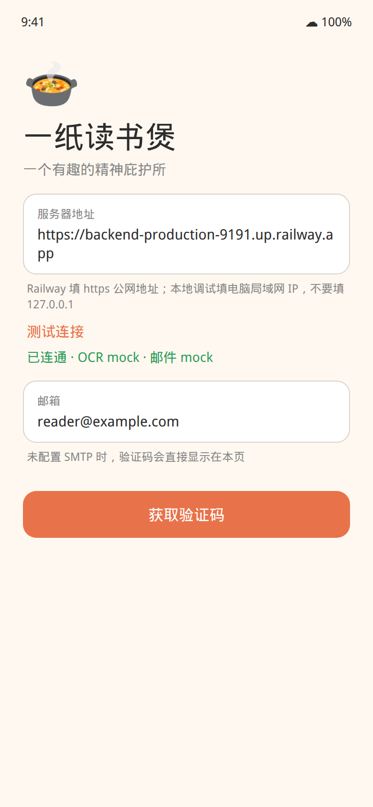
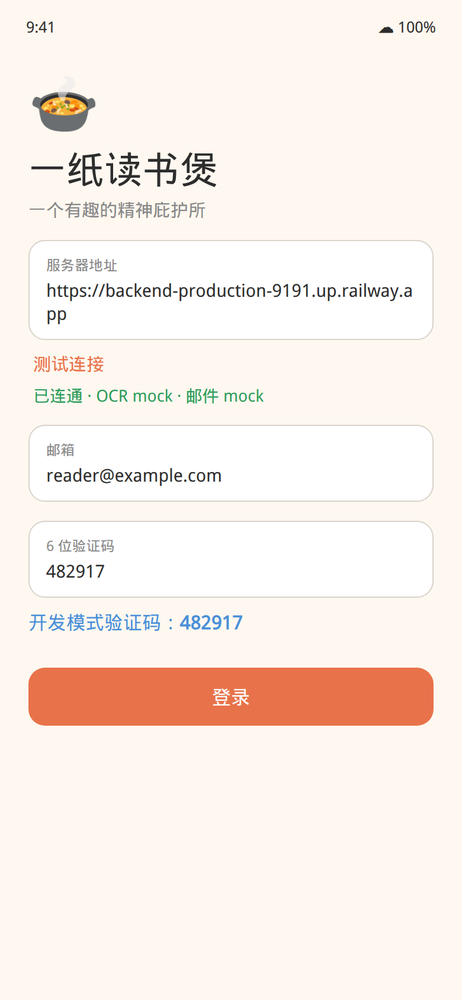
- 邮箱填任意有效格式即可，例如
me@example.com。 - 点 获取验证码。当前未开通真实邮件，6 位数字会出现在登录页蓝色提示里（「开发模式验证码」）。
- 把这 6 位填进验证码框，点 登录。
3. 我的锅
登录后默认来到「我的锅」，这里是你的书架。
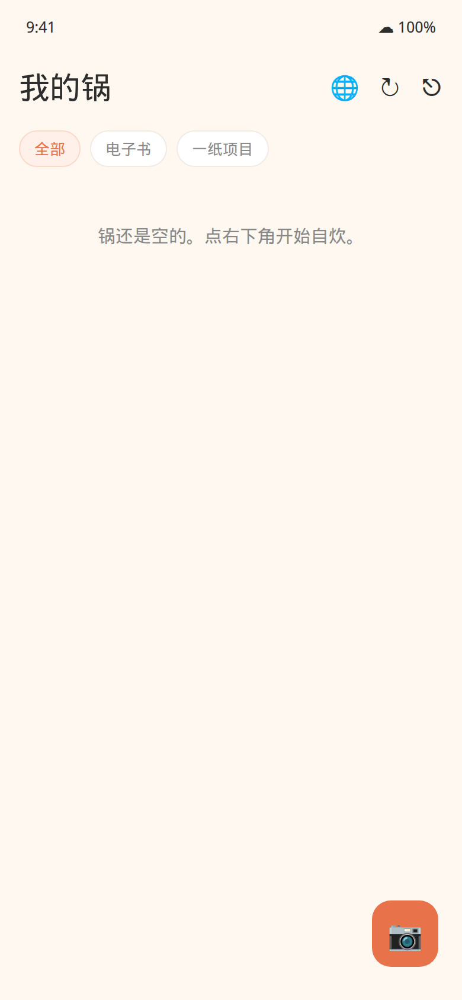
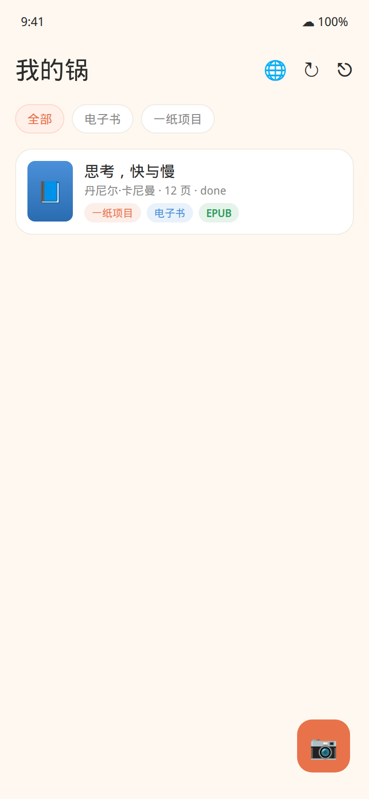
- 右下角橙色相机：开始自炊。
- 右上角地球：改服务器地址。
- 旋转箭头：从云端同步。
- 退出：登出当前账号。
- 筛选项：全部 / 电子书 / 一纸项目。
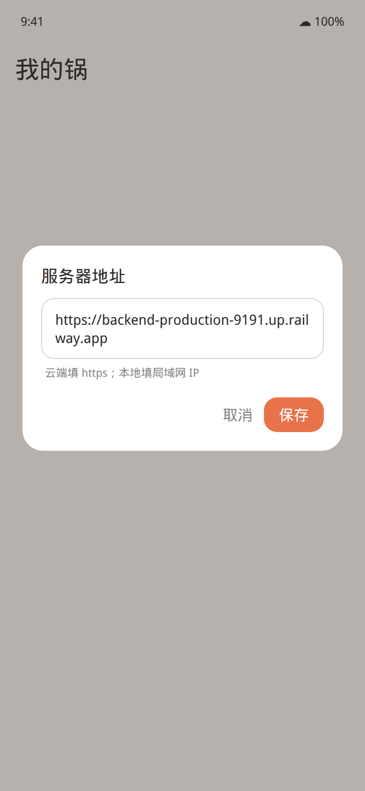
4. 自炊：扫描纸书
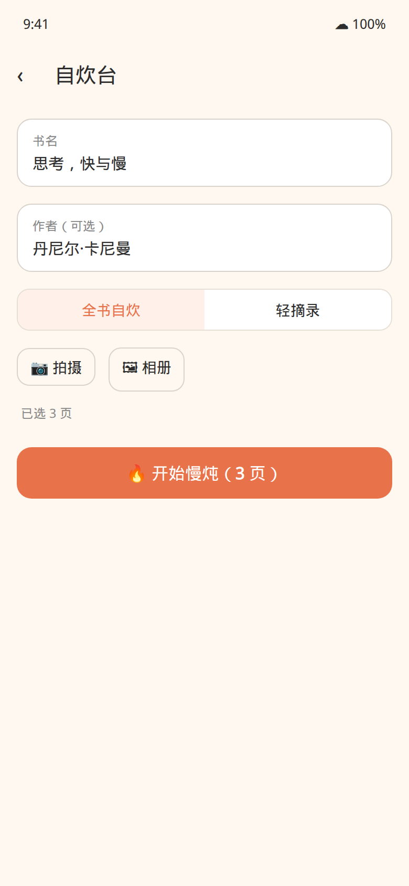
- 填书名，作者可选。
- 选 全书自炊 或 轻摘录（少页、片段也可以）。
- 用 拍摄 或 相册 加入书页，至少 1 页。
- 点 开始慢炖。
拍照小建议：光线均匀、文字平铺、尽量一次一页。页序就是之后电子书的页序。
5. 慢炖与出锅
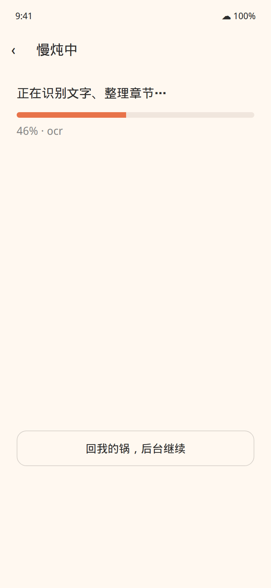
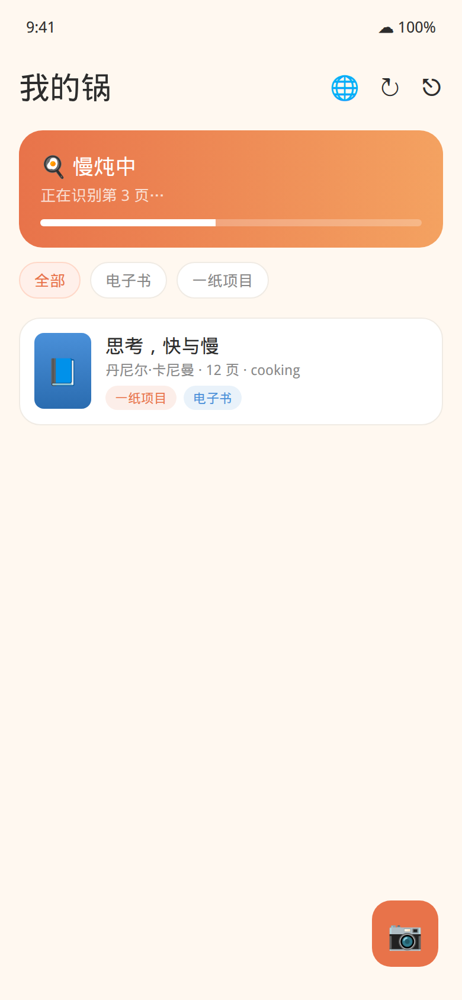
慢炖时服务端会做：压缩图片 → OCR → 章节结构 → 一纸精华 → 可搜索 PDF。可以点「回我的锅，后台继续」，不必盯着这一屏。
完成后点 查看出锅结果，进入这本书的首页。
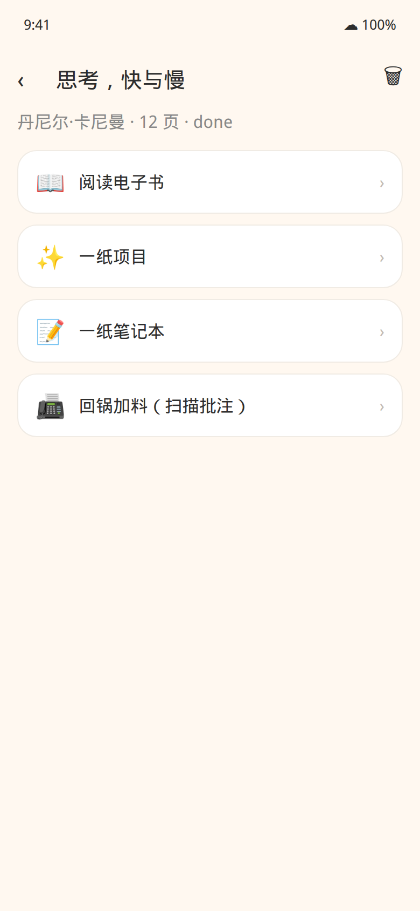
6. 阅读、搜索、翻译、导出
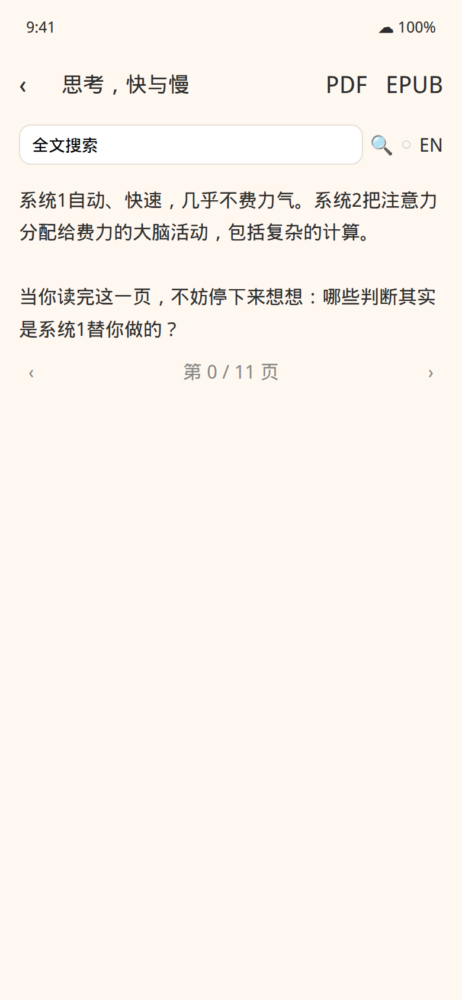
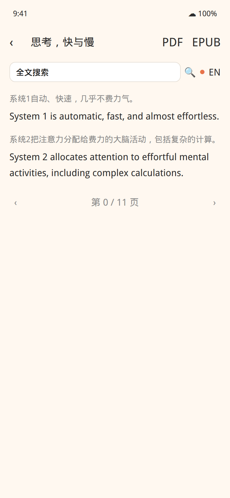
- 顶部搜索框：全文搜索，点结果可跳页。
- 开关 + EN / JA / ZH：按段翻译（有缓存，同一页再开会更快）。
- PDF / EPUB 图标：导出后走系统分享。EPUB 会先在后台生成，稍等片刻。
- 底部左右箭头翻页。
7. 一纸项目
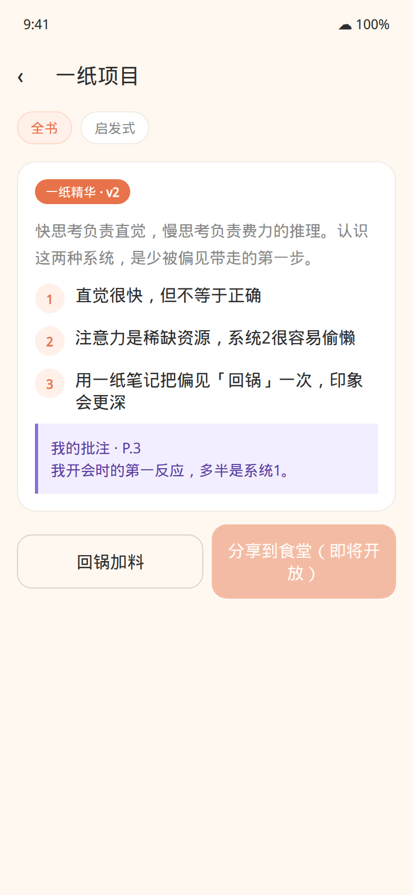
慢炖完成后会生成「一纸项目」：全书摘要、关键洞察、章节提纲。回锅加料后，个人批注会出现在紫色卡片里，版本号会 +1。
「分享到食堂」是下一阶段的社区，当前按钮不可用。
8. 一纸笔记本 / 回锅加料
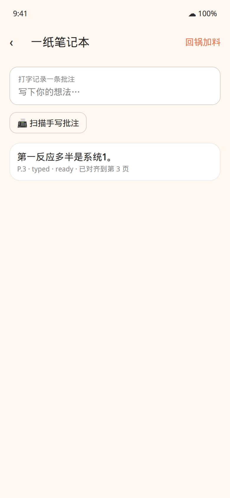
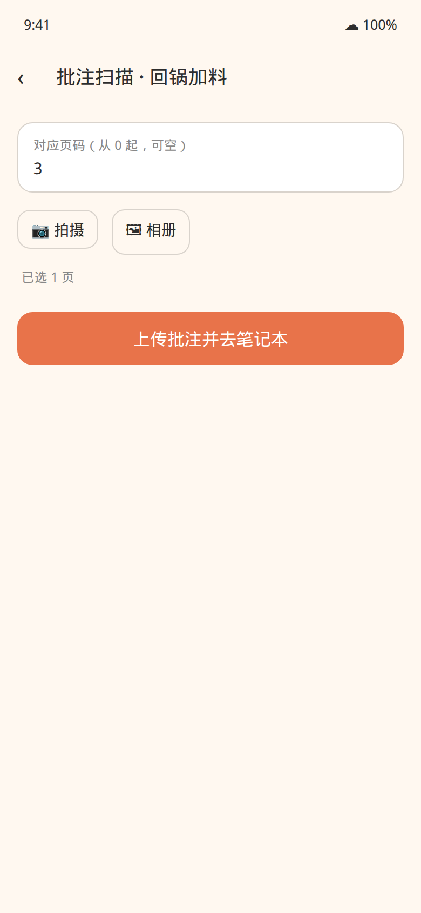
- 在笔记本里直接打字，点发送。
- 或点「扫描手写批注」，拍下你写在书上的字。页码从 0 起，可空。
- 点一条批注可以修正识别结果。
- 点右上角 回锅加料，这些批注会重新炖进一纸项目。
9. 多设备同步
数据存在云端，跟邮箱账号走。另一部安卓装上同一 APK，填同一个服务器，用同一个邮箱验证码登录，再点「我的锅」右上角同步，书、项目和批注会拉下来。
10. 常见问题
测试连接失败
检查地址是否带 https://、有没有多打空格。云端请用上面的 Railway 地址；若改回电脑调试，手机必须和电脑同一 Wi-Fi，后端要监听 0.0.0.0:8000。
收不到邮件
当前版本验证码显示在登录页，不用查邮箱。
识别结果像在讲故事、不像我的书
这是 Mock 模式，用来走通流程。要真实 OCR / 摘要，需要配置百度与通义密钥。
慢炖很久
可以回「我的锅」等横幅走完。真 OCR 时页数越多越久。
这本书不想要了
打开书首页右上角删除。这是软删除，同步后其他设备也会看不到。
这一版有什么、没有什么
有：邮箱验证码登录、扫描自炊、慢炖、PDF / EPUB、搜索与翻译、一纸项目、笔记本与回锅、多设备同步。
没有：一纸食堂社区、AI 搭子自由对话、应用内付费、苹果手机安装包。